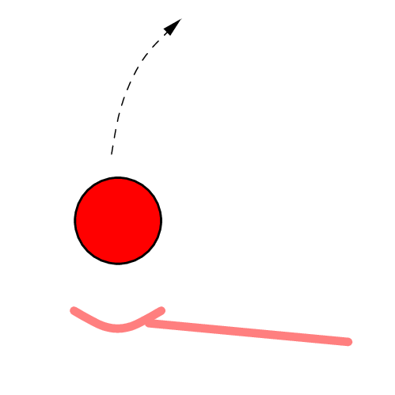
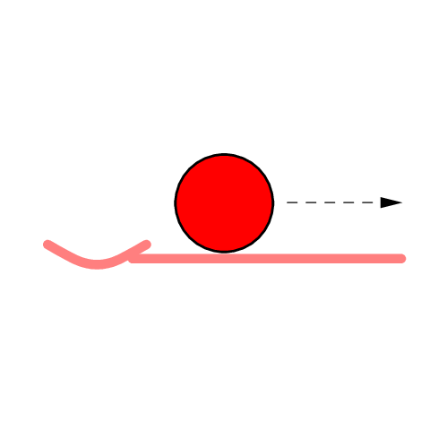
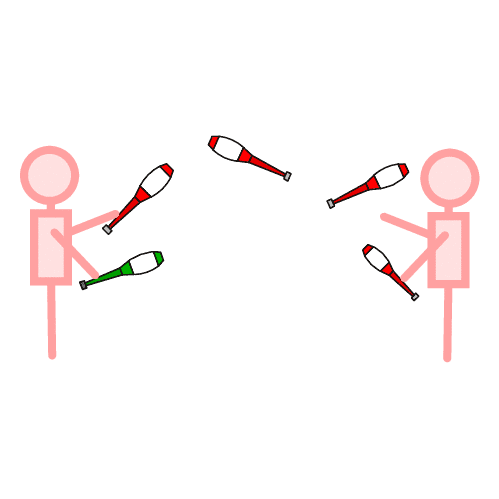
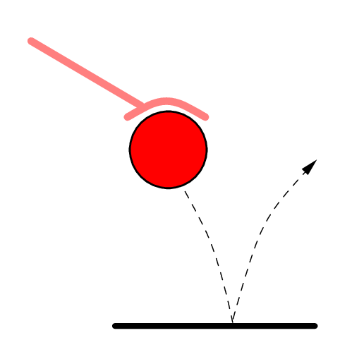
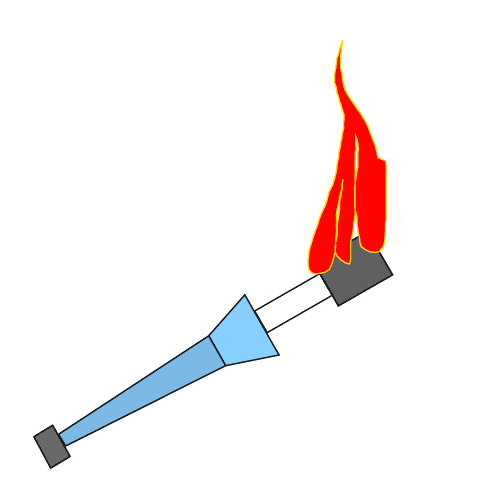

Jste zde: Žonglování » Informace o žonglování » Druhy žonglování
Základní přehled způsobů žonglování. Nejedná se o úplný nebo přesný seznam. Jde jen o naznačení, jak můžeš žonglovat. S čím vším můžeš žonglovat se dozvíš v přehledu žonglérských pomůcek.
 Předměty vyhazuješ vzhůru a ony se působením gravitační síly vrací zpět.
 Předměty si kutálíš po těle. Většinou se používají míčky.
 Žonglování ve více lidech. Pro passing jsou ideální kužely.
 Míčky neházíš nahoru, ale odrážíš od podlahy.
 Žonglování s ohněm. Existují ohnivé kužely, tyče, poi-poi a vějíře. Oheň se dá i plivat, ale to je velmi nebezpečné.